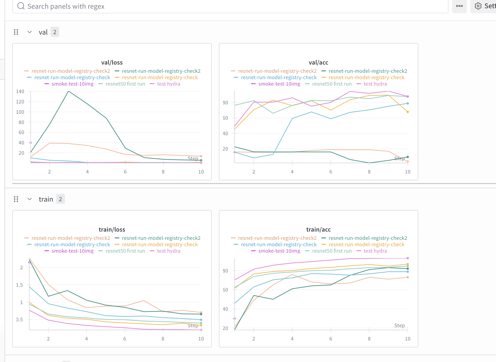
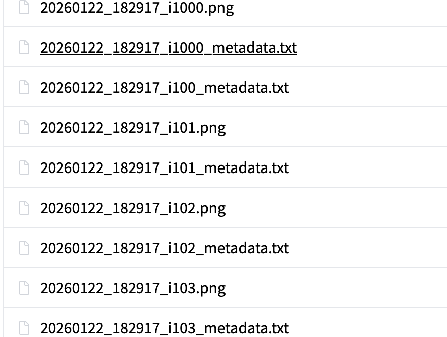
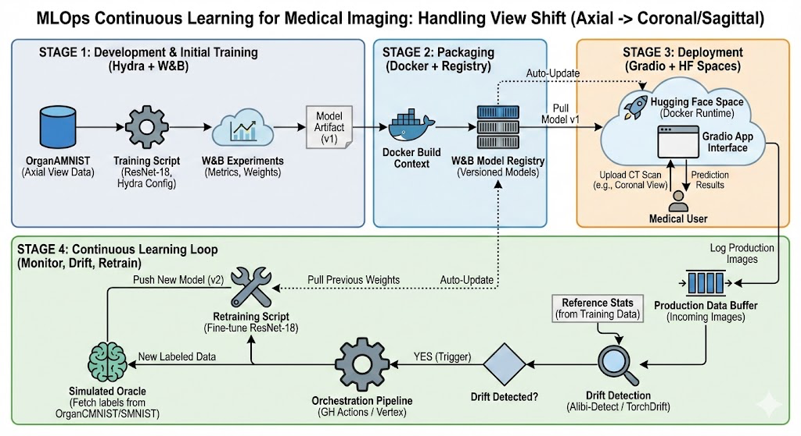

Operations
This is the report template for the exam. Please only remove the text formatted as with three dashes in front and behind like:
--- question 1 fill here ---
Where you instead should add your answers. Any other changes may have unwanted consequences when your report is
auto-generated at the end of the course. For questions where you are asked to include images, start by adding the image
to the figures subfolder (please only use .png, .jpg or .jpeg) and then add the following code in your answer:

In addition to this markdown file, we also provide the report.py script that provides two utility functions:
Running:
bash
python report.py html
Will generate a .html page of your report. After the deadline for answering this template, we will auto-scrape
everything in this reports folder and then use this utility to generate a .html page that will be your serve
as your final hand-in.
Running
bash
python report.py check
Will check your answers in this template against the constraints listed for each question e.g. is your answer too short, too long, or have you included an image when asked. For both functions to work you mustn't rename anything. The script has two dependencies that can be installed with
bash
pip install typer markdown
or
bash
uv add typer markdown
The checklist is exhaustive which means that it includes everything that you could do on the project included in the curriculum in this course. Therefore, we do not expect at all that you have checked all boxes at the end of the project. The parenthesis at the end indicates what module the bullet point is related to. Please be honest in your answers, we will check the repositories and the code to verify your answers.
data.py file such that it downloads whatever data you need and preprocesses it (if necessary) (M6)model.py and a training procedure to train.py and get that running (M6)requirements.txt/requirements_dev.txt files or keeping your
pyproject.toml/uv.lock up-to-date with whatever dependencies that you are using (M2+M6)pep8) while doing the project (M7)Enter the group number you signed up on
Answer:
Group 44
Enter the study number for each member in the group
Example:
sXXXXXX, sXXXXXX, sXXXXXX
Answer:
s253711, s214397, s253102, s253816, s252682
Did you end up using any open-source frameworks/packages not covered in the course during your project? If so which did you use and how did they help you complete the project?
Recommended answer length: 0-200 words.
Example: We used the third-party framework ... in our project. We used functionality ... and functionality ... from the package to do ... and ... in our project.
Answer:
We have used Hugging Face spaces and Gradio frameworks. We have utilized HF spaces to deploy inference of our application and Gradio to write a frontend for the HF spaces application.
In the following section we are interested in learning more about you local development environment. This includes how you managed dependencies, the structure of your code and how you managed code quality.
Explain how you managed dependencies in your project? Explain the process a new team member would have to go through to get an exact copy of your environment.
Recommended answer length: 100-200 words
Example: We used ... for managing our dependencies. The list of dependencies was auto-generated using ... . To get a complete copy of our development environment, one would have to run the following commands
Answer:
We manage dependencies with uv. Runtime dependencies generally live in pyproject.toml, and the exact, resolved versions are captured in uv.lock. Adding a package is done with uv add
To get an identical setup, a new team member should:
We expect that you initialized your project using the cookiecutter template. Explain the overall structure of your code. What did you fill out? Did you deviate from the template in some way?
Recommended answer length: 100-200 words
Example: From the cookiecutter template we have filled out the ... , ... and ... folder. We have removed the ... folder because we did not use any ... in our project. We have added an ... folder that contains ... for running our experiments.
Answer:
We used the DTU MLOps cookiecutter as the base. Core code lives under src/dtu_mlops/ (data loader, model definitions, training/evaluation scripts, data drifting detector). configs/ now holds Hydra configs - a main config.yaml plus model-specific configs for resnet18/50. I think overall the folder structure follows the provided template without major changes.
Did you implement any rules for code quality and format? What about typing and documentation? Additionally, explain with your own words why these concepts matters in larger projects.
Recommended answer length: 100-200 words.
Example: We used ... for linting and ... for formatting. We also used ... for typing and ... for documentation. These concepts are important in larger projects because ... . For example, typing ...
Answer:
We enforce code quality with pre-commit hooks: Ruff for linting (and optional auto-fix), uv lock --check to keep dependencies in sync. We use type hints throughout the codebase (in data/model/train modules). Formatting is handled by Ruff’s formatter in CI. We believe these concepts are important to make our code clean and readable (if we are talking about humans) or to make our code more verifiable in order to detect coding agents hallucinations faster (if we talk about AI).
In the following section we are interested in how version control was used in your project during development to corporate and increase the quality of your code.
How many tests did you implement and what are they testing in your code?
Recommended answer length: 50-100 words.
Example: In total we have implemented X tests. Primarily we are testing ... and ... as these the most critical parts of our application but also ... .
Answer:
We have implemented 50 unit tests in total. While there are more unit tests that we could have implemented, we focused mostly on the core modules. These include:
Training pipeline: Tests for the trainining and validation loops, correct switching between training and validation modes and correct input label handling
Model construction: Tests for the forward pass output shapes for both ResNet18 and Resnet50, block behavior and weight initialization
Data pipeline: Tests for the dataset's length, the output shapes and types, correct normalization and computation for mean and standard deviation values.
Along with the above core modules we tested some utility modules, such as configuration loading and resolution (config_utils.py), weights and biases model registry helpers (model_registry.py), evaluation of the model (evaluation.py) and the API functions (api.py). Note that we used mocking to avoid real downloads or network calls!
What is the total code coverage (in percentage) of your code? If your code had a code coverage of 100% (or close to), would you still trust it to be error free? Explain you reasoning.
Recommended answer length: 100-200 words.
Example: The total code coverage of code is X%, which includes all our source code. We are far from 100% coverage of our ** code and even if we were then...*
Answer:
The total code coverage of our project is 68%, which includes most source files in src/dtu_mlops, excluding drift_detection.py, eval_hf.py and upload_organcmnist_subset.py. The overall percentage is reduced by these few scripts that are not part of the core modules, since unit tests were not implemented for them. Achieving 100% of coverage would not guarantee that the code is error free. Code coverage just measures how many lines of code are run while tests are executed. That being said, bugs can still exist since there may be cases that are not covered by the implemented tests. Code coverage is a useful indicator of test completeness rather than a guarantee of correctness.
Did you workflow include using branches and pull requests? If yes, explain how. If not, explain how branches and pull request can help improve version control.
Recommended answer length: 100-200 words.
Example: We made use of both branches and PRs in our project. In our group, each member had an branch that they worked on in addition to the main branch. To merge code we ...
Answer:
We worked on feature branches instead of committing directly to main (to enforce this we set up branch protection). Then, we opened a pull request to merge into main. PRs enforced our CI (pre-commit hooks, Ruff, uv lock check, tests) and gave teammates a chance to review before code landed into main.
Did you use DVC for managing data in your project? If yes, then how did it improve your project to have version control of your data. If no, explain a case where it would be beneficial to have version control of your data.
Recommended answer length: 100-200 words.
Example: We did make use of DVC in the following way: ... . In the end it helped us in ... for controlling ... part of our pipeline
Answer:
We did not use DVC in this project. If we expanded beyond the fixed MedMNIST download, DVC would be useful for versioning larger or changing datasets. However we have used Hugging face datasets for storing data from API inference (which included build in version control)
Discuss you continuous integration setup. What kind of continuous integration are you running (unittesting, linting, etc.)? Do you test multiple operating systems, Python version etc. Do you make use of caching? Feel free to insert a link to one of your GitHub actions workflow.
Recommended answer length: 200-300 words.
Example: We have organized our continuous integration into 3 separate files: one for doing ..., one for running ... testing and one for running ... . In particular for our ..., we used ... .An example of a triggered workflow can be seen here:
Answer:
We have organized our continuous integration into two workflows, one for code formatting and one for unit testing with code coverage. Both workflows are triggered automatically on every push/pull request to the main branch in order for all new changes to be validated before merging. For code formatting we have linting.yaml which runs on Ubuntu and checks the quality of the code using pre-commit hooks. At first, it installs dependencies via uv and then executes pre-commit run --all-files, enforcing consistent formatting. This way we keep our repository consistent. For the unit testing we have tests.yaml which runs our pytest unit tests and produces the code coverage reports. This workflow runs in a matrix setup across Ubuntu, Windows and macOS and generates a terminal code coverage summary along with an HTML report (index.html). The coverage output is uploaded as an artifact under Actions section for easy inspection. We use caching to speed up repeated workflow executions by reusing previously downloaded packages.
An example of a triggered workflow can be seen here: https://github.com/V4ldeSalnikov/DTU_MLops/pull/45/checks
In the following section we are interested in learning more about the experimental setup for running your code and especially the reproducibility of your experiments.
How did you configure experiments? Did you make use of config files? Explain with coding examples of how you would run a experiment.
Recommended answer length: 50-100 words.
Example: We used a simple argparser, that worked in the following way: Python my_script.py --lr 1e-3 --batch_size 25
Answer:
We use Hydra configs. Defaults live in config.yaml and model variants in configs/model/. Hydra composes them and lets us override per run. Example: uv run python src/dtu_mlops/train.py model=resnet50 epochs=5 batch_size=32 wandb_name="experiment_run"
Reproducibility of experiments are important. Related to the last question, how did you secure that no information is lost when running experiments and that your experiments are reproducible?
Recommended answer length: 100-200 words.
Example: We made use of config files. Whenever an experiment is run the following happens: ... . To reproduce an experiment one would have to do ...
Answer:
We rely on Hydra configs plus pinned dependencies to make runs reproducible. All experiment settings live in config.yaml and *.yaml; any CLI override (e.g., epochs=5 model=resnet50) is captured by Hydra. We log the fully resolved config into Weights & Biases alongside metrics and checkpoints, so each run records exactly which parameters and model variant were used. Dependencies are locked in uv.lock, and environments are recreated with uv sync --locked, ensuring the same package versions across machines/CI. To reproduce a run, a teammate can pull the repo, uv sync --locked, export their WANDB_API_KEY, and rerun train.py with the logged overrides from W&B.
Upload 1 to 3 screenshots that show the experiments that you have done in W&B (or another experiment tracking service of your choice). This may include loss graphs, logged images, hyperparameter sweeps etc. You can take inspiration from this figure. Explain what metrics you are tracking and why they are important.
Recommended answer length: 200-300 words + 1 to 3 screenshots.
Example: As seen in the first image when have tracked ... and ... which both inform us about ... in our experiments. As seen in the second image we are also tracking ... and ...
Answer:
As seen in the first image of

we are mainly tracking loss/acurracy for both training and validation.For training we log loss and accuracy to check that model indeed learns (likely we are not using DINO and can check if training works by looking at loss that goes down).
For validation we check accuracy to investigate how our model generalizes to unseen data.
Since this course is not model centric we are not doing too much of hyperparameter tuning and this validation dataset performance can be viewed as unbiased estimate of the test performance.
Docker is an important tool for creating containerized applications. Explain how you used docker in your experiments/project? Include how you would run your docker images and include a link to one of your docker files.
Recommended answer length: 100-200 words.
Example: For our project we developed several images: one for training, inference and deployment. For example to run the training docker image:
docker run trainer:latest lr=1e-3 batch_size=64. Link to docker file:Answer:
One of the docker files that we have devoloped was for deployment. To build this image following command was used: 'docker build -f dockerfiles/api.dockerfile -t mlops-api:latest .'. As for running it: 'docker run -d -p 7860:7860 --name mlops-api mlops-api:latest'. Due to usage of hugging face and size of the docker image (3.6 Gb on docker desktop) we used just gradio app for deployment (as it is compatible with hugging face). Nevertheless, for now, this image can be used to work locally between machines and is stored there: https://dtudk-my.sharepoint.com/:f:/r/personal/s253711_dtu_dk/Documents/Courses/Courses%20projects/MLOps?csf=1&web=1&e=K7s02H .
When running into bugs while trying to run your experiments, how did you perform debugging? Additionally, did you try to profile your code or do you think it is already perfect?
Recommended answer length: 100-200 words.
Example: Debugging method was dependent on group member. Some just used ... and others used ... . We did a single profiling run of our main code at some point that showed ...
Answer:
We debugged with a mix of quick unit tests, but mostly using print/log statements inside the training loop and data pipeline. Pre-commit Ruff checks caught many simple issues (unused imports, style) before runtime. For configuration bugs (Hydra overrides, W&B setup), we ran the scripts with small values to check if everything runs correctly. CI failures (lint/tests) also guided some fixes. We didn’t perform deep profiling, but we believe our code would benifit from it, but with relatively small training and evaluation datasets we didnt run into heavy performance issues.
In the following section we would like to know more about your experience when developing in the cloud.
List all the GCP services that you made use of in your project and shortly explain what each service does?
Recommended answer length: 50-200 words.
Example: We used the following two services: Engine and Bucket. Engine is used for... and Bucket is used for...
Answer:
We have not used Google Cloud since we thought that such level of complexity is not required for our project. However, we have used Hugging Face datasets to store data and Hugging Face spaces to run inference.
The backbone of GCP is the Compute engine. Explained how you made use of this service and what type of VMs you used?
Recommended answer length: 100-200 words.
Example: We used the compute engine to run our ... . We used instances with the following hardware: ... and we started the using a custom container: ...
Answer:
We didn't use GCP, but Hugging Face for deployment. It runs on CPU basic version, which entitle: 2vCPU and 16 GB of RAM. The app is run on one python file, which contains backend function and frontend for the gradio app.
Insert 1-2 images of your GCP bucket, such that we can see what data you have stored in it. You can take inspiration from this figure.
Answer:
We are storing images and "labels" from our simulated inference (note: to speed up the process we uploaded "inference data" with labels directly to the dataset, bypassing Hugging Face space, however we have checked and insured that data from inference also would record correctly).

Upload 1-2 images of your GCP artifact registry, such that we can see the different docker images that you have stored. You can take inspiration from this figure.
Answer:
We used hugging face for deployment, so we do not have GCP artifact registry. We also used gradio app method to do so, so we do not have different docker images (as ours was too big for deployment in the free version).
Upload 1-2 images of your GCP cloud build history, so we can see the history of the images that have been build in your project. You can take inspiration from this figure.
Answer:
As before, we didn't use GCP for deployment and we didn't use docker images to do so. For this reason we can't show history of images, as we don't have it.
Did you manage to train your model in the cloud using either the Engine or Vertex AI? If yes, explain how you did it. If not, describe why.
Recommended answer length: 100-200 words.
Example: We managed to train our model in the cloud using the Engine. We did this by ... . The reason we choose the Engine was because ...
Answer:
We have trained the model locally to save time and resources. For our use case, local GPU was enough.
Did you manage to write an API for your model? If yes, explain how you did it and if you did anything special. If not, explain how you would do it.
Recommended answer length: 100-200 words.
Example: We did manage to write an API for our model. We used FastAPI to do this. We did this by ... . We also added ... to the API to make it more ...
Answer:
We did manage to write an API for our model. We used Gradio to do this. We decided to use Gradio as it is compatible with Hugging Face, which we selected as our deployment space (mostly due to the experience of some of our group members with it). We created the needed functions in the api.py file plus the gradio interface. It contains basically two fields and two buttons. One field for receiving images and second to give results of prediction. One button was to start classification and second to reset given images. Two versions of the application were created in total. One local and one to work on Hugging Face. The local version expected the model to be stored locally and the dockerfile was prepared to create the image of the application. The second version was prepared for deployment on Hugging Face. Additionally, it contained an authentication part, due to concerns of unconnected people uploading inappropriate images (like real unanonymised CT images), which was linked to the model and the dataset deployed on Hugging Face and collected given images to linked dataset (to gather data for drift detection).
For access use: https://huggingface.co/spaces/G44mlops/API, with the credentials below:
username: user and password: sdgagdss-214qwdsfa-1fds12-fdAW132
Did you manage to deploy your API, either in locally or cloud? If not, describe why. If yes, describe how and preferably how you invoke your deployed service?
Recommended answer length: 100-200 words.
Example: For deployment we wrapped our model into application using ... . We first tried locally serving the model, which worked. Afterwards we deployed it in the cloud, using ... . To invoke the service an user would call
curl -X POST -F "file=@file.json"<weburl>Answer:
We managed to deploy our API both locally and in cloud. For the local version it could be deployed from the source code itself or from the docker image. For cloud deployment we used Hugging Face with gradio option. The additional step, that we had to do and was not mentioned previously, was change from uv ('pyproject.toml' and 'uv.lock') dependencies to 'requirments.txt' as it refused to work otherwise. To use the application, the user has to log in using credentials. Usage of this application was limited in this way due to earlier mentioned concerns. Additionally, this Hugging Face application deployment integrated well with receiver database and the model deployed on Hugging Face.
Did you perform any unit testing and load testing of your API? If yes, explain how you did it and what results for the load testing did you get. If not, explain how you would do it.
Recommended answer length: 100-200 words.
Example: For unit testing we used ... and for load testing we used ... . The results of the load testing showed that ... before the service crashed.
Answer:
We used pytest for unit testing our API. The test focuses mostly on the helper functions in api.py, such as ensuring that the model loading is done correctly handling errors when the checkpoint file is missing, preprocessing pipeline is constructed with the correct transforms and the extraction of the class labels works as expected. We used mocking to avoid downloading real models or doing external network calls.
While we did not perform full load testing of the deployed API in our project, if we were to do load testing we would have to run the Gradio service locally or in a container and simulate users sending image requests simultaneously. Then we could potentially report latency and errors while increasing the number of simultaneous requests, until the service crashes.
Did you manage to implement monitoring of your deployed model? If yes, explain how it works. If not, explain how monitoring would help the longevity of your application.
Recommended answer length: 100-200 words.
Example: We did not manage to implement monitoring. We would like to have monitoring implemented such that over time we could measure ... and ... that would inform us about this ... behaviour of our application.
Answer:
We didn’t build production monitoring yet. We think monitoring would help to show how our models perform over time and make the service debuggable and guide retraining/rollbacks.
In the following section we would like you to think about the general structure of your project.
How many credits did you end up using during the project and what service was most expensive? In general what do you think about working in the cloud?
Recommended answer length: 100-200 words.
Example: Group member 1 used ..., Group member 2 used ..., in total ... credits was spend during development. The service costing the most was ... due to ... . Working in the cloud was ...
Answer:
We have not used google cloud, the only cloud solution we have used is Hugging Face. We think it is a better alternative for the course project both ideologically - due to the platform's focus on open source and open science - and financially, since Hugging Face provides free ZeroGPU instances and a lot of storage for datasets/models.
Did you implement anything extra in your project that is not covered by other questions? Maybe you implemented a frontend for your API, use extra version control features, a drift detection service, a kubernetes cluster etc. If yes, explain what you did and why.
Recommended answer length: 0-200 words.
Example: We implemented a frontend for our API. We did this because we wanted to show the user ... . The frontend was implemented using ...
Answer:
We have implemented drift detection and tested that it sucessfully detects changes of dataset from OrganAMNIST to OrganCMIST. We have impelemented model registry, where models are stored. After a new model is trained, it triggers the process that checks if the new model performs better on the validation set than the current production model.
Include a figure that describes the overall architecture of your system and what services that you make use of. You can take inspiration from this figure. Additionally, in your own words, explain the overall steps in figure.
Recommended answer length: 200-400 words
Example:
The starting point of the diagram is our local setup, where we integrated ... and ... and ... into our code. Whenever we commit code and push to GitHub, it auto triggers ... and ... . From there the diagram shows ...
Answer:

the diagram is not 100% accurate (look at the description below):The starting point is the training of our local model: 1. We load the OrganAMNIST dataset (subset of MedMNIST) 2. We created training scripts for model training (primarily utilizing ResNet 18, although we did couple of runs with ResNet 50) 3. We setup Weights and bias logging + Hydra configuration
The second stage is model evaluation and "staging": 1. We evaluate our model on the validation set 2. Denpending on the model's performance we either assign "staging" or "production" label in the Weights and Biases model registry 3. We manually upload the best model to Hugging Face
Third stage is Deployment and Inference: 1. We have created a Docker container to test inference locally 2. We implemented a Gradio app and configured Hugging Face space 3. We have set up the dataset connected to Hugging Face space in order to record inference data
Last stage in drift detection: 1. We take (simulated) inference data from Hugging Face 2. We setup a drift detector (by extracting features, using our ResNet model) and using KernelMMDDriftDetector from torchdrift on top of it
Unfortunately, we didn't have time to implement fine-tuning or build the model and create a more comprehensive continuous machine learning pipeline with training and deployment on cloud.
Discuss the overall struggles of the project. Where did you spend most time and what did you do to overcome these challenges?
Recommended answer length: 200-400 words.
Example: The biggest challenges in the project was using ... tool to do ... . The reason for this was ...
Answer:
I think we struggled the most during two phases - the start of the project and the deployment. Also, more generally, it was hard to get used to the "MLOps mindset".
During the start of the project there was a lot of uncertantainty and overall discussion around what tools/dataset/frameworks/models to pick. Additionally, doing the first Github Actions CI pipline was also challenging. In the deployment phase we faced similiar issues, since we did not want to use Google cloud, we needed to find a workaround on how to fit our model and all the required dependencies on the Hugging Face spaces
Also, it was a bit unusual for us to adapt to the MLOps way of thinking about ML systems. Since most ML related courses at university are mainly "model centric" or "theory centric", where we just pick a dataset and focus primarily on the modelling part - here we had to think about scallability, reliability and the overall flow of the system.
We think that this course was definitely very useful for us to understand the gap between more "academic-style education" and "real world solutions".
State the individual contributions of each team member. This is required information from DTU, because we need to make sure all members contributed actively to the project. Additionally, state if/how you have used generative AI tools in your project.
Recommended answer length: 50-300 words.
Example: Student sXXXXXX was in charge of developing of setting up the initial cookie cutter project and developing of the docker containers for training our applications. Student sXXXXXX was in charge of training our models in the cloud and deploying them afterwards. All members contributed to code by... We have used ChatGPT to help debug our code. Additionally, we used GitHub Copilot to help write some of our code. Answer:
Student s253711 was reponsible for docker containerization, Gradio frontend API for inference and Hugging Face spaces setup. Student s214397 was responsible for some of the unit testing. Student s253102 was reponsible for the majority of unit testing, some parts of the CI/CD pipeline and the majority of the data loading pipeline. Student s253816 was responsible for the training code. Student s252682 was responsible for the initial setup (cookie cutter template, CI/CD), Weights and Biases logging and Hydra Config, uploading the model and the simulation of inference to Hugging Face and data drift detection.
GenAI statement :
We used ChatGPT to help us with code debugging and understanding some frameworks more deeply. We have use coding agents to write some parts of the code.
{kind=link}
{kind=link}
{kind=link}
{kind=link}
{kind=link}